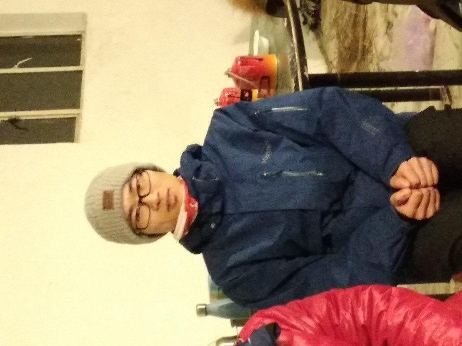

[转寄/推荐][转贴][删除][修改][设置可RE属性][上一篇][返回讨论区][下一篇][回文章][同主题列表][同主题阅读][从这里展开]
发信人: primrose (Primrose), 信区: outdoor
标 题: 【团爆】登山队~
发信站: 饮水思源 (2018年09月19日17:16:01 星期三)
登山队长：孙启昌
个人介绍：无
（既然登山队长没有自我介绍，那看一下吃瓜群众对他的描述好了）
吃瓜群众A：
曾经的他也是个帅气boy，而现在在假笑boy的路上一去不复返。
换了金丝边框眼镜后只能用斯文败类来形容了。
下一届中的最强者，样样精通，对各类装备如数家珍，对雪山有狂热的追求。
 screen.width - 200){this.width = screen.width - 200}">
|
[转寄/推荐][转贴][删除][修改][设置可RE属性][上一篇][返回讨论区][下一篇][回文章][同主题列表][同主题阅读][从这里展开]